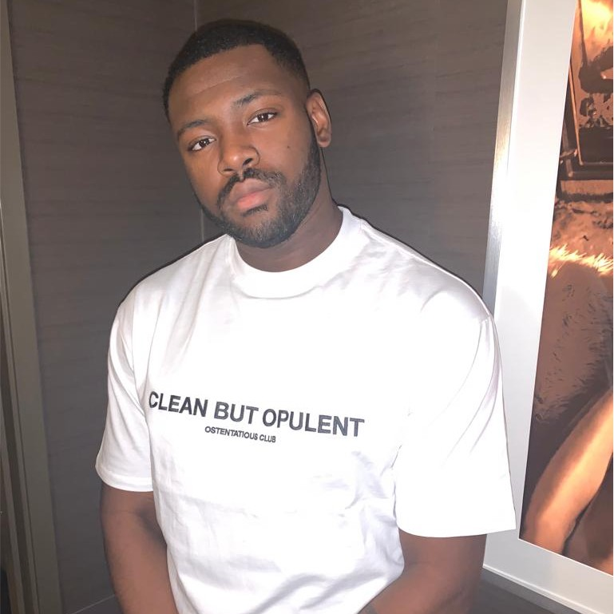

About Me
A little insight into my background and interests.

A little insight into my background and interests.
My name is Jibola, also known as Jibs. I work in IT Service Desk Support.
I like to keep fit through sports, running, and staying active.
My main sport is padel, which I play regularly both socially and competitively.
It helps me stay active, improve my fitness, and I enjoy the social and
competitive side of the game while constantly improving my skills.
I enjoy learning new skills and building things, especially websites and technical projects. I’m always looking for ways to improve and develop both personally and professionally.